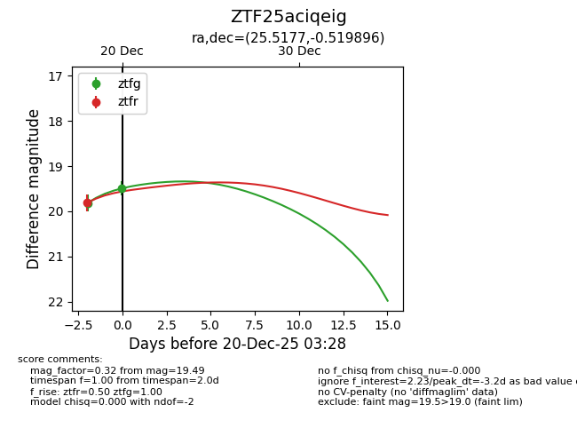
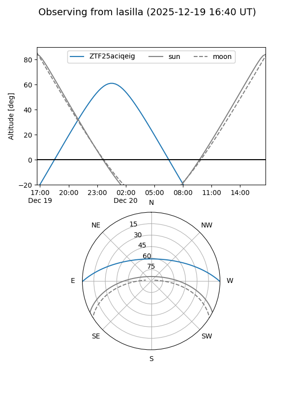
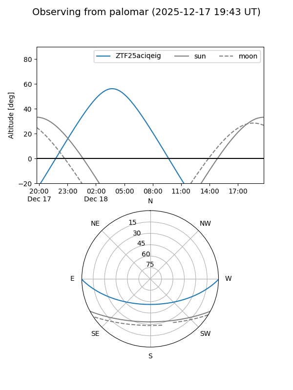
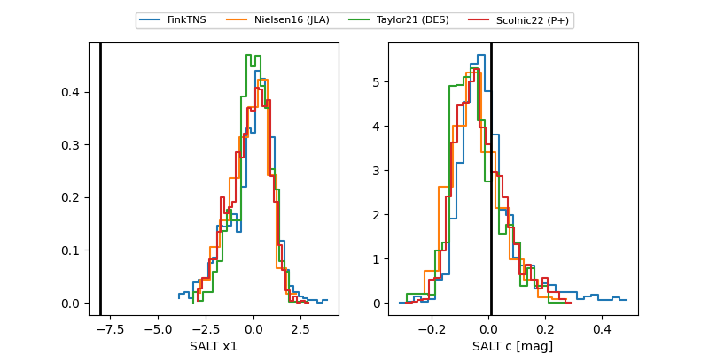

ZTF25aciqeig
Target ZTF25aciqeig at 2025-12-22 14:51
Aliases and brokers:
FINK: fink-portal.org/ZTF25aciqeig
Lasair: lasair-ztf.lsst.ac.uk/objects/ZTF25aciqeig
ALeRCE: alerce.online/object/ZTF25aciqeig
alt names
ZTF25aciqeig (ztf,fink_ztf)
Coordinates:
equatorial (ra, dec) = 25.5177,-0.51990
equatorial (HMS+DMS) = 01:42:04.25,-00:31:11.63
galactic (l, b) = (149.5727,-60.74557)
Flags:
Photometry:
last ztfg=19.41, ztfr=19.49
3 ztfg, 3 ztfr detections
Lightcurve

Visibility


Additional plots
